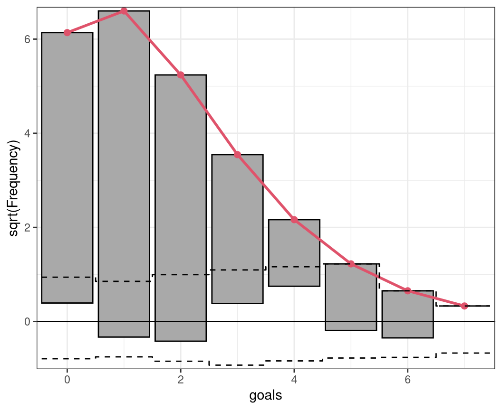
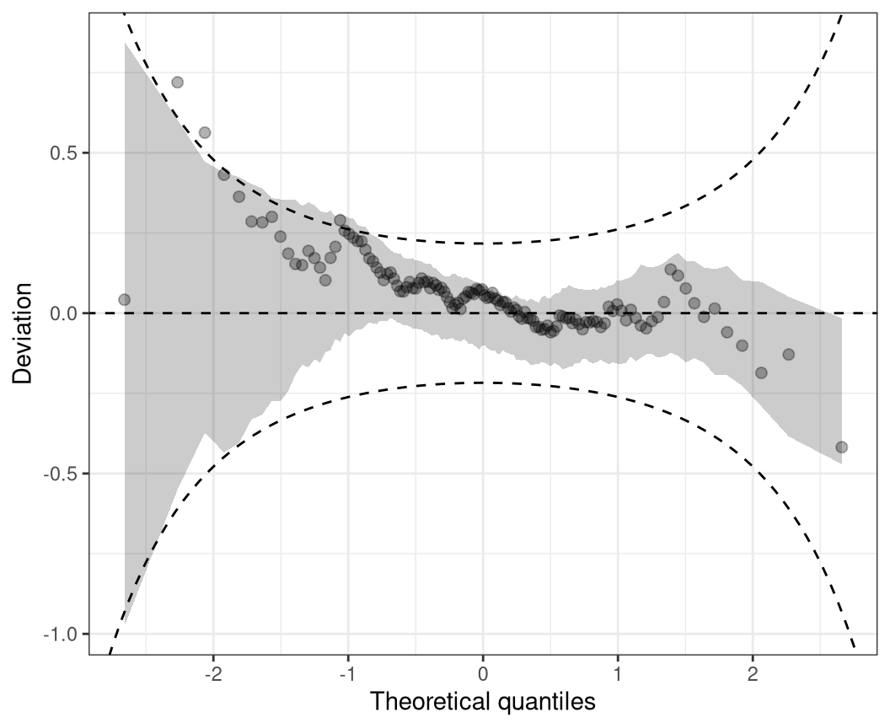

Graphics for Assessing Goodness of Fit
graphics.RmdOverview
Marginal: Rootogram
Conditional: PIT histogram, Q-Q plot of randomized residuals, worm plot.
Notation: Previous section
Application: FIFA 2018 goals
Rootogram
The rootogram is a graphical tool for assessing the goodness of fit in terms of mariginal calibration of a parametric univariate distributional model, with estimated parameters \(\hat{\boldsymbol{\theta}}_{i} = (\hat{\theta}_{i1}, \ldots, \hat{\theta}_{iK})^\top\) and \(f( \cdot )\) desribing the density or probability mass function. Rootograms evaluate graphically whether observed frequencies \(\text{obs}_j\) match the expected frequencies \(\text{exp}_j\) by plotting histogram-like rectangles or bars for the observed frequencies and a curve for the fitted frequencies, both on a square-root scale. In the form presented here, it was implemented by Kleiber and Zeileis (2016) building on work of Tukey (1977).
In the most general form, given an observational vector of a random variable \(y_i (i = 1, \ldots, n)\) which is divided into subsets by a set of breakpoints \(b_0, b_1, b_2, \dots~\), the observed and expected frequencies are given by
\[\text{obs}_j = \sum_{i=1}^{n}w_{i} I(y_i \in (b_j, b_{j+1}]),\] \[\text{exp}_j = \sum_{i=1}^{n}w\{F(b_{j+1} | \hat{\boldsymbol{\theta}}_{i}) - F(b_{j} | \hat{\boldsymbol{\theta}}_{i})\},\]
with \(F( \cdot )\) being the CDF of the modeled distributional model \(f( \cdot )\) and \(w_i\) being optional observation-specific weights. Whereby, the weights are typically needed either for survey data or for situations with model-based weights (Kleiber and Zeileis 2016).
For a discrete variable \(y_i\), the observed and expected frequencies can be simplified and are given for each integer \(j\) by
\[\text{obs}_j = \sum_{i=1}^{n}I(y_i - j),\] \[\text{exp}_j = \sum_{i=1}^{n}f(j | \hat{\boldsymbol{\theta}}_{i}),\]
with the indicator variable \(I( \cdot )\) (Kleiber and Zeileis 2016). As rootograms are best known for count data, the latter form is quite common.
Different styles of rootograms have been proposed and are extensively discussed in Kleiber and Zeileis (2016). As default, they propose a so called “hanging” rootogram, which aligns all deviations along the horizontal axis, as the rectangles are drawn from \(\sqrt{exp_j}\) to \(\sqrt{exp_j} - \sqrt{obs_j}\), so that they “hang” from the curve with the expected frequencies \(\sqrt{exp_j}\).
The concept of comparing observed and expected frequencies graphically was also introduced in the seminal work on assessing calibration and sharpness for a predictive probalilty model by Gneiting, Balabdaoui, and Raftery (2007) and, building on this, applied to count data by Czado, Gneiting, and Held (2009). However, since in both cases either the deviations or the expected and observed frequencies are presented only as lines connecting the respective frequencies, deviations are more difficult to detect compared to the rootograms introduced by Tukey (1977) and further enhanced by Kleiber and Zeileis (2016).
rootogram(m)
PIT histogram
As described in the introduction, to check for probabilistic calibration of a regression model, Dawid (1984) proposed the use of the probability integral transform (PIT) which is simply the predictive cumulative distribution function (CDF) evaluated at the observations. PIT values have been used under various names (e.g., Smith 1985; Dunn and Smyth 1996; Brockwell 2007) , to emphasize their similar properties to residuals we follow Warton, Thibaut, and Wang (2017) and refer to them as PIT residuals from now on.
For a continuous random variable \(y_i (i = 1, \ldots, n)\), PIT residuals are defined as
\[u_i = F(y_i | \, \hat{\boldsymbol{\theta}}_i)\]
where \(F( \cdot )\) denotes the CDF of the modeled distribution \(f( \cdot )\) with estimated parameters \(\hat{\boldsymbol{\theta}}_{i} = (\hat{\theta}_{i1}, \ldots, \hat{\theta}_{iK})^\top\). If the estimated model is a good approximation to the true data generating process, the observation will be drawn from the predictive distribution and the PIT residuals \(u_i\) are approximately uniformly distributed on \([0, 1]\). Plotting the histogram of the PIT residuals and checking for uniformity is therefore a common empirical way of checking for calibration (Diebold, Gunther, and Tay 1998; Gneiting, Balabdaoui, and Raftery 2007). Whereas, deviations from uniformity point to underlying forecast errors and model deficiencies: U-shaped histograms refer to underdispersed predictive distributions, inverted U-shaped histograms to overdispersion, and skewed histograms suggest that central tendencies must be biased (Gneiting, Balabdaoui, and Raftery 2007; Czado, Gneiting, and Held 2009).
When considering discrete response distributions or distributions with a discrete component, e.g., in case of censoring, for a random discrete variable \(y_i\) the PIT \(u_i\) can be generated as a random draw from the interval \([F(y_i - 1 | \, \hat{\boldsymbol{\theta}}_i), F(y_i | \, \hat{\boldsymbol{\theta}}_i)]\). Even if this leads to some randomness in the graphical representation of PIT residuals, for cases with a high number of observations the impact on the graphical evaluation when repeating the calculations (i.e. drawing new values \(u_i\)) is typically rather small. For small data sets, we recommend to increase the number of random draws which significantly reduces the randomness in the graphical display.
Alternatively, a nonrandom PIT histogram was introduced by Czado, Gneiting, and Held (2009), where rather than building on randomized pointwise PIT resdiuals \(u_i\) the expected fraction of the CDF along the interval \([F(y_i - 1 | \, \hat{\boldsymbol{\theta}}_i), F(y_i | \, \hat{\boldsymbol{\theta}}_i)]\) is used. This is asympotically equivalent to drawing an infinite number of random PIT residuals.
pithist(m)
Q-Q residuals plot
Quantile residuals are simply the inverse cumulative distribution function of a standard normal distribution \(\Phi^{-1}\) evaluated at the PIT residuals \(u_i (i = 1, \ldots, n)\), hence, they can be defined as
\[\hat{r}_i = \Phi^{-1}(F(y_i | \, \hat{\boldsymbol{\theta}}_{i})) = \Phi^{-1}(u_i),\]
where \(F( \cdot )\) again denotes the cumulative distribution function (CDF) of the modeled distribution \(f( \cdot )\) with estimated parameters \(\hat{\boldsymbol{\theta}}_{i} = (\hat{\theta}_{i1}, \ldots, \hat{\theta}_{iK})^\top\) (Dunn and Smyth 1996). As before, for discrete or partly discrete responses, the approach includes some randomization to achieve continuous \(u_i\) values; quantile residuals are therefore often referred to as randomized quantile residuals in the literature (Dunn and Smyth 1996).
In case of a correct model fit, the values \(u_i\) are uniformly distributed on the unit interval and the Q-Q residuals should at least approximately be standard normally distributed. Hence, to check for normality, quantile residuals can be graphically compared to theoretical quantiles of the standard normal distribution, where strong deviations from the bisecting line indicate a misspecified model fit.
Mathematically, Q-Q plot consists of the tuples
\[(z_{(1)}, \hat{r}_{(1)}), \ldots, (z_{(n)}, \hat{r}_{(n)}),\]
where \(\hat{r}_{(i)}\) denotes the \(i\)th order statistic of the quantile residuals, so that \(\hat{r}_{(1)} \leq \hat{r}_{(2)} \cdot \leq \hat{r}_{(n)}\), and \(z_{(i)}\) is the ordered statistics from the respective standard normal quantiles \(\Phi^{-1}( p_i)\), evaluated at the cumulative proportion \(p_i = (i - 0.5) / n\) for \(n\) greater \(10\). This graphical evaluation is well known as normal probability plot or normal Q-Q plot (Hoaglin 2006). Due to the transformation of the PIT residuals \(u_i\) to the normal scale, their extreme values are more widely spread, so that normal Q-Q diagrams are better suited than, for example, PIT histograms to detect violations of the distribution assumption within its tails. An additional possible advantage of Q-Q plots is that they avoid the necessity of defining breakpoints as typically needed for histogram style evaluations (Klein et al. 2015).
But Q-Q plots can also be applied to check if residuals follow any other known distribution, by employing any other inverse cumulative distribution function of interest instead of \(\Phi^{-1}\) in the computation and comparing the quantile residuals \(\hat{r}_i\) to the respective theoretical quantiles. This is called than a theoretical quantile-quantile plot or Q-Q plot for short (Friendly 1991).
qqrplot(m, confint = "line")Worm plot
As in Q-Q plots, small too medium deviations can be quite hard to detect, untilting the plot by subtracting the theoretical quantiles, makes detecting pattern of departure from a now horizontal line much easier. Mathematically, therefore, the tuples in the plot are
\[(z_{(1)}, \hat{r}_{(1)} - z_{(1)}), \ldots, (z_{(n)}, \hat{r}_{(n)} - z_{(n)}),\]
where as before, where \(\hat{r}_{(i)}\) denotes the order statistic of the empirical quantile residuals and \(z_{(i)}\) the ordered statistics of the respective standard normal quantiles. This so-called de-trended Q-Q plot (Friendly 1991) is best known by the application of Buuren and Fredriks (2001), and is therefore usually referred to as worm plot according to their naming.
wormplot(m, confint = "line")
References
Brockwell, A.E. 2007. “Universal Residuals: A Multivariate Transformation.” Statistics & Probability Letters 77 (14): 1473–8. https://doi.org/https://doi.org/10.1016/j.spl.2007.02.008.
Buuren, Stef van, and Miranda Fredriks. 2001. “Worm Plot: A Simple Diagnostic Device for Modelling Growth Reference Curves.” Statistics in Medicine 20 (8): 1259–77. https://doi.org/10.1002/sim.746.
Czado, Claudia, Tilmann Gneiting, and Leonhard Held. 2009. “Predictive Model Assessment for Count Data.” Biometrics 65 (4): 1254–61. https://doi.org/10.1111/j.1541-0420.2009.01191.x.
Dawid, A. P. 1984. “Present Position and Potential Developments: Some Personal Views: Statistical Theory: The Prequential Approach.” Journal of the Royal Statistical Society: Series A (General) 147 (2): 278–92. https://doi.org/10.2307/2981683.
Diebold, Francis X., Todd A. Gunther, and Anthony S. Tay. 1998. “Evaluating Density Forecasts with Applications to Financial Risk Management.” International Economic Review 39 (4): 863–83. https://doi.org/10.2307/2527342.
Dunn, Peter K., and Gordon K. Smyth. 1996. “Randomized Quantile Residuals.” Journal of Computational and Graphical Statistics 5 (3): 236–44. https://doi.org/10.2307/1390802.
Friendly, Michael. 1991. SAS System for Statistical Graphics. 1st ed. Cary, NC: SAS Institute Inc.
Gneiting, Tilmann, Fadoua Balabdaoui, and Adrian E. Raftery. 2007. “Probabilistic Forecasts, Calibration and Sharpness.” Journal of the Royal Statistical Society: Series B (Methodological) 69 (2): 243–68. https://doi.org/10.1111/j.1467-9868.2007.00587.x.
Hoaglin, David C. 2006. “Using Quantiles to Study Shape.” In Exploring Data Tables, Trends, and Shapes, 417–60. John Wiley & Sons, Ltd. https://doi.org/https://doi.org/10.1002/9781118150702.ch10.
Kleiber, Christian, and Achim Zeileis. 2016. “Visualizing Count Data Regressions Using Rootograms.” The American Statistician 70 (3): 296–303. https://doi.org/10.1080/00031305.2016.1173590.
Klein, Nadja, Thomas Kneib, Stefan Lang, and Alexander Sohn. 2015. “Bayesian Structured Additive Distributional Regression with an Application to Regional Income Inequality in Germany.” Annals of Applied Statistics 9: 1024–52. https://doi.org/10.1214/15-aoas823.
Smith, J. Q. 1985. “Diagnostic Checks of Non-Standard Time Series Models.” Journal of Forecasting 4 (3): 283–91. https://doi.org/https://doi.org/10.1002/for.3980040305.
Tukey, John W. 1977. Exploratory Data Analysis. Addison-Wesley.
Warton, David I., Loïc Thibaut, and Yi Alice Wang. 2017. “The Pit-Trap—A ‘Model-Free’ Bootstrap Procedure for Inference About Regression Models with Discrete, Multivariate Responses.” PLOS ONE 12 (7): 1–18. https://doi.org/10.1371/journal.pone.0181790.